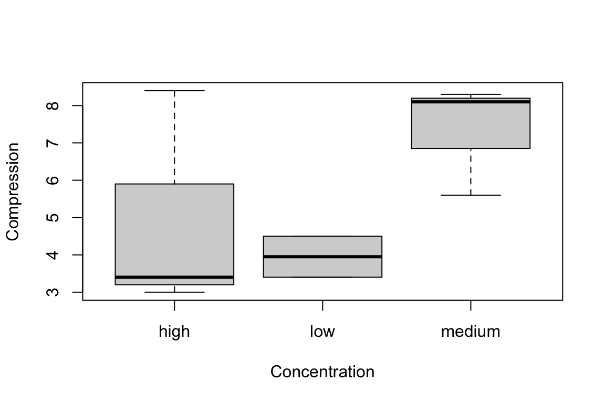

Code
4 * 4[1] 16Code
(4 + 3 * 2^2)[1] 16
R is a computer programming language and environment especially useful for graphic visualization and statistical analysis of data. It is an offshoot of a language developed in 1976 at Bell Laboratories called S. R is an interpreted language, meaning that every time code is run it must be translated to machine language by the R interpreter, as opposed to being compiled prior to running. R is the premier computational platform for statistical analysis thanks to its GNU open-source status and countless packages contributed by diverse members of the scientific community.
R is a programming language designed specifically for statistical computing and graphics. Created in the early 1990s as an open-source implementation of the S language, R has become the lingua franca of statistical analysis in academia and is widely used in industry as well.
Several features make R particularly well-suited for data analysis. It provides an extensive collection of statistical and graphical techniques built into the language. It is powerful, flexible, and completely free. It runs on Windows, Mac, and Linux, so your code will work across platforms. New capabilities are constantly being added through packages contributed by the community, with thousands of packages available for specialized analyses.
R excels at reproducibility. You can keep your scripts to document exactly what analyses you performed. Unlike point-and-click software where actions leave no trace, R code provides a complete record of your analytical workflow. This record can be shared with collaborators, included in publications, and revisited years later when you need to remember how you produced a particular result.
You can write your own functions in R, extending the language to meet your specific needs. Extensive online help and active user communities mean that answers to most questions are a web search away. The RStudio integrated development environment makes working with R much more pleasant, especially for newcomers. And with tools like R Markdown and Quarto, you can embed your analyses in polished documents, presentations, websites, and books—this book itself was created with these tools.
R must be installed before RStudio. Download R from https://www.r-project.org, selecting the version appropriate for your operating system. Follow the installation instructions for your platform.
RStudio is an integrated development environment (IDE) that makes working with R much easier. Download the free RStudio Desktop from https://www.rstudio.com. RStudio provides a console for running R commands, an editor for writing scripts, tools for viewing plots and data, and integration with version control systems.
After installing both programs, launch RStudio. You will see a window divided into panes, each serving a different purpose. The console pane is where R commands are executed. The source pane is where you edit scripts and documents. The environment pane shows what objects currently exist in your R session. The files/plots/packages/help pane provides access to various utilities.
R evaluates expressions and returns results. You can use it as a calculator by typing arithmetic expressions at the console.
4 * 4[1] 16(4 + 3 * 2^2)[1] 16Notice that R follows standard mathematical order of operations: exponentiation before multiplication and division, which come before addition and subtraction. Parentheses can override this ordering.
More useful than evaluating isolated expressions is storing values in variables for later use. Variables are assigned using the <- operator (a less-than sign followed by a hyphen).
x <- 2
x * 3[1] 6y <- x * 3
y - 2[1] 4Variable names must begin with a letter but can contain letters, numbers, periods, and underscores after the first character. R is case-sensitive, so myVariable, MyVariable, and myvariable are three different names. Choose descriptive names that make your code readable. It is good practice to avoid periods in variable names, as they have other functionality in related programming languages like Python.
Variable names cannot begin with numbers or contain operators. The following will produce errors:
3y <- 3 # cannot start with a number
3*y <- 3 # cannot include operatorsR has reserved words that cannot be used as variable names because they have special meaning in the language:
| Reserved Words | Purpose |
|---|---|
if, else |
Conditional statements |
for, while, repeat |
Loops |
function |
Function definition |
in, next, break |
Loop control |
TRUE, FALSE |
Logical constants |
NULL, NA, NaN, Inf |
Special values |
R also has semi-reserved names—built-in functions and constants that you can technically overwrite but should avoid:
# These work but are dangerous:
T <- 5 # Overwrites TRUE abbreviation
c <- "text" # Shadows the c() function
mean <- 42 # Shadows mean()
# If you accidentally overwrite something, remove it:
rm(c) # Restores access to c()Never name variables T, F (abbreviations for TRUE/FALSE), c, t, mean, sum, data, or df. These are commonly used R functions, and shadowing them leads to confusing errors.
Note that when you assign a value to a variable, R does not print anything. To see a variable’s value, type its name alone or use the print() function.
z <- 100
z[1] 100print(z)[1] 100A fundamental principle of R is that everything is an object. Numbers, text, datasets, functions—all are stored as objects with specific properties. Understanding this helps you debug problems and write better code.
Every object has a class (which determines how functions treat it) and a type (its underlying storage mode). Use class() and typeof() to examine objects:
# Numbers are objects
x <- 42
class(x)[1] "numeric"typeof(x)[1] "double"# Text strings are objects
name <- "Gene Expression"
class(name)[1] "character"# Even functions are objects!
class(mean)[1] "function"The str() function (structure) provides a compact display of any object’s structure—it is one of the most useful diagnostic tools in R:
# Examine a vector
str(c(1, 2, 3, 4, 5)) num [1:5] 1 2 3 4 5# Examine a data frame
str(head(iris))'data.frame': 6 obs. of 5 variables:
$ Sepal.Length: num 5.1 4.9 4.7 4.6 5 5.4
$ Sepal.Width : num 3.5 3 3.2 3.1 3.6 3.9
$ Petal.Length: num 1.4 1.4 1.3 1.5 1.4 1.7
$ Petal.Width : num 0.2 0.2 0.2 0.2 0.2 0.4
$ Species : Factor w/ 3 levels "setosa","versicolor",..: 1 1 1 1 1 1When functions produce errors or unexpected results, checking the class of your objects is often the first step toward understanding what went wrong.
Functions are the workhorses of R. A function takes inputs (called arguments), performs some operation, and returns an output. R has many built-in functions, and packages provide thousands more.
log(10)[1] 2.302585sqrt(16)[1] 4exp(1)[1] 2.718282Functions are called by typing their name followed by parentheses containing their arguments. Many functions accept multiple arguments, separated by commas. Arguments can be specified by position or by name.
round(3.14159, digits = 2)[1] 3.14round(3.14159, 2) # same result, argument specified by position[1] 3.14To learn about a function, use the help system. Type ?functionname or help(functionname) to open the documentation.
?round
help(sqrt)The fundamental data structure in R is the vector, an ordered collection of values of the same type. You create vectors using the c() function (for concatenate or combine).
numbers <- c(1, 2, 3, 4, 5)
numbers[1] 1 2 3 4 5names <- c("Alice", "Bob", "Carol")
names[1] "Alice" "Bob" "Carol"Many operations in R are vectorized, meaning they operate on entire vectors at once rather than requiring you to loop through elements.
numbers * 2[1] 2 4 6 8 10numbers + 10[1] 11 12 13 14 15numbers^2[1] 1 4 9 16 25You can access individual elements using square brackets with an index (R uses 1-based indexing, so the first element is at position 1).
numbers[1][1] 1numbers[3][1] 3numbers[c(1, 3, 5)][1] 1 3 5R provides convenient functions for creating regular sequences.
1:10 [1] 1 2 3 4 5 6 7 8 9 10seq(0, 10, by = 2)[1] 0 2 4 6 8 10seq(0, 1, length.out = 5)[1] 0.00 0.25 0.50 0.75 1.00rep(1, times = 5)[1] 1 1 1 1 1rep(c(1, 2), times = 3)[1] 1 2 1 2 1 2R can generate random numbers from various probability distributions, which is invaluable for simulation and understanding statistical concepts.
# Draw 1000 values from a normal distribution with mean 0 and SD 10
x <- rnorm(1000, mean = 0, sd = 10)
hist(x)
# Draw from a binomial distribution: 1000 experiments, 20 trials each, p=0.5
heads <- rbinom(n = 1000, size = 20, prob = 0.5)
hist(heads)
The set.seed() function allows you to make random simulations reproducible by initializing the random number generator to a known state.
set.seed(42)
rnorm(5)[1] 1.3709584 -0.5646982 0.3631284 0.6328626 0.4042683set.seed(42) # same seed produces same "random" numbers
rnorm(5)[1] 1.3709584 -0.5646982 0.3631284 0.6328626 0.4042683Data frames are R’s structure for tabular data—rows of observations and columns of variables. Each column can contain a different type of data (numeric, character, logical), but all values within a column must be the same type.
# Create a data frame from vectors
hydrogel_concentration <- factor(c("low", "high", "high", "high",
"medium", "medium", "medium", "low"))
compression <- c(3.4, 3.4, 8.4, 3, 5.6, 8.1, 8.3, 4.5)
conductivity <- c(0, 9.2, 3.8, 5, 5.6, 4.1, 7.1, 5.3)
mydata <- data.frame(hydrogel_concentration, compression, conductivity)
mydata hydrogel_concentration compression conductivity
1 low 3.4 0.0
2 high 3.4 9.2
3 high 8.4 3.8
4 high 3.0 5.0
5 medium 5.6 5.6
6 medium 8.1 4.1
7 medium 8.3 7.1
8 low 4.5 5.3Access columns using the $ operator or square brackets.
mydata$compression[1] 3.4 3.4 8.4 3.0 5.6 8.1 8.3 4.5mydata[, 2] # second column[1] 3.4 3.4 8.4 3.0 5.6 8.1 8.3 4.5mydata[1, ] # first row hydrogel_concentration compression conductivity
1 low 3.4 0mydata[1, 2] # first row, second column[1] 3.4Real analyses typically begin by reading data from external files. R provides functions for various file formats.
# Read comma-separated values
data <- read.csv("mydata.csv")
# Read tab-separated values
data <- read.table("mydata.txt", header = TRUE, sep = "\t")
# Read Excel files (requires readxl package)
library(readxl)
data <- read_excel("mydata.xlsx")Similarly, you can write data to files.
write.csv(mydata, "output.csv", row.names = FALSE)
write.table(mydata, "output.txt", sep = "\t", row.names = FALSE)R has extensive graphics capabilities. The base plot() function creates scatterplots and other basic visualizations.
x <- 1:10
y <- x^2
plot(x, y,
xlab = "X values",
ylab = "Y squared",
main = "A Simple Plot",
col = "blue",
pch = 19)
Histograms visualize the distribution of a single variable.
data <- rnorm(1000)
hist(data, breaks = 30, col = "lightblue", main = "Normal Distribution")
Boxplots compare distributions across groups.
boxplot(compression ~ hydrogel_concentration, data = mydata,
xlab = "Concentration", ylab = "Compression")
We will explore the more sophisticated ggplot2 package for graphics in a later chapter.
While you can type commands directly at the console, for anything beyond simple explorations you should write scripts—text files containing R commands that can be saved, edited, and rerun.
In RStudio, create a new script with File > New File > R Script. Type your commands in the script editor, and run them by placing your cursor on a line and pressing Ctrl+Enter (Cmd+Enter on Mac) or by selecting code and clicking Run.
Scripts should be self-contained, including all the commands needed to reproduce your analysis from start to finish. Begin scripts by loading required packages, then reading data, then performing analyses. Add comments (lines beginning with #) to explain what your code does and why.
# Analysis of hydrogel mechanical properties
# Author: Your Name
# Date: 2025-04-01
# Load required packages
library(tidyverse)
# Read data
data <- read.csv("hydrogel_data.csv")
# Calculate summary statistics
summary(data)
# Create visualization
ggplot(data, aes(x = concentration, y = compression)) +
geom_boxplot()When you encounter problems, R provides several resources. The ? operator opens documentation for functions. The help.search() function searches the help system for topics. The example() function runs examples from a function’s documentation.
?mean
help.search("regression")
example(plot)Beyond R’s built-in help, the internet offers vast resources. Stack Overflow has answers to almost any R question you can imagine. Package vignettes provide tutorials for specific packages. The RStudio community forums are welcoming to beginners.
When asking for help online, provide a minimal reproducible example—the smallest piece of code that demonstrates your problem, including sample data. This makes it much easier for others to understand and solve your issue.
R has several fundamental data types that you will work with frequently.
Assignments and operations can be performed on characters as well as numbers. Characters need to be set off by quotation marks to differentiate them from numeric objects or variable names.
x <- "I Love"
print(x)[1] "I Love"y <- "Biostatistics"
print(y)[1] "Biostatistics"# Combine strings using c()
z <- c(x, y)
print(z)[1] "I Love" "Biostatistics"The variable z is now a vector of character objects. Note that we are overwriting our previous numeric assignments—a good general rule is to use descriptive, unique names for each variable.
Sometimes we would like to treat character objects as if they were categorical units for subsequent calculations. These are called factors, and we can convert a character vector to factor class.
z_factor <- as.factor(z)
print(z_factor)[1] I Love Biostatistics
Levels: Biostatistics I Loveclass(z_factor)[1] "factor"Note that factor levels are reported alphabetically. The class() function tells us what type of object we are working with—it is one of the most important diagnostic tools in R. Often you can debug your code simply by checking and changing the class of an object.
Factors are especially important for statistical analyses where we might want to calculate the mean or variance for different experimental treatments. In that case, the treatments would be coded as different levels of a factor.
R uses special values to represent missing or undefined data. The most common is NA, which stands for “Not Available.”
class(NA)[1] "logical"NA is a logical data type and is distinct from the character string “NA”, the numeric 0, or an empty string. It is also a reserved word and cannot be used as a variable name.
Any instance of a blank entry in your data file will be read into R as NA. Many functions in R will not work by default if passed any NA values:
num <- c(0, 1, 2, NA, 4)
mean(num)[1] NA# Use na.rm = TRUE to ignore missing values
mean(num, na.rm = TRUE)[1] 1.75# Check for missing values
is.na(num)[1] FALSE FALSE FALSE TRUE FALSEA common source of confusion involves floating-point arithmetic. Computers represent decimal numbers with limited precision, which can lead to unexpected results:
# This seems wrong, but is due to how computers store decimals
0.1 + 0.2 == 0.3[1] FALSE# The actual values differ slightly
print(0.1 + 0.2, digits = 20)[1] 0.30000000000000004441print(0.3, digits = 20)[1] 0.2999999999999999889Never use == to compare floating-point numbers directly. Instead, use all.equal() which checks if values are “nearly equal” within a small tolerance:
# Safe comparison for floating-point numbers
all.equal(0.1 + 0.2, 0.3)[1] TRUE# Use isTRUE() if you need a logical result
isTRUE(all.equal(0.1 + 0.2, 0.3))[1] TRUEThe tidyverse provides dplyr::near() as a convenient alternative, especially when filtering data frames:
# Works well in filter operations
library(dplyr)
data |> filter(near(value, target_value))Always use all.equal() or near() instead of == when comparing decimal calculations. This is a common source of bugs in data analysis code.
Isolating specific elements from vectors is called indexing. R uses 1-based indexing with square brackets [].
x <- c(10, 20, 30, 40, 50, 100, 200)
# First element
x[1][1] 10# Third element
x[3][1] 30# Series of consecutive elements
x[1:4][1] 10 20 30 40# Last four elements
x[4:7][1] 40 50 100 200# Non-consecutive elements using c()
x[c(1:3, 5)][1] 10 20 30 50# All elements EXCEPT the first two
x[-c(1:2)][1] 30 40 50 100 200Functions that provide information about vectors:
head(): returns the first elements of an objecttail(): returns the last elements of an objectlength(): returns the number of elements in a vectorclass(): returns the class of elements in a vectorFunctions that modify or generate vectors:
sort(): returns a sorted vectorseq(): creates a sequence of valuesrep(): repeats valuesrep(1, 5)[1] 1 1 1 1 1rep("treatment", 5)[1] "treatment" "treatment" "treatment" "treatment" "treatment"Functions for random sampling:
sample(): randomly selects elements from a vectorrnorm(): draws values from a normal distributionrbinom(): draws values from a binomial distributionset.seed(): sets the random number generator seed for reproducibilityFunctions to change data types:
as.numeric(): converts to numeric classas.factor(): converts to factor classas.character(): converts to character classLists in R are aggregates of different objects that can be mixed types and different lengths.
vec1 <- c(10, 20, 30, 40, 50, 100, 200)
vec2 <- c("happy", "sad", "grumpy")
vec3 <- factor(c("high", "low"))
mylist <- list(vec1, vec2, vec3)
print(mylist)[[1]]
[1] 10 20 30 40 50 100 200
[[2]]
[1] "happy" "sad" "grumpy"
[[3]]
[1] high low
Levels: high lowclass(mylist)[1] "list"str(mylist)List of 3
$ : num [1:7] 10 20 30 40 50 100 200
$ : chr [1:3] "happy" "sad" "grumpy"
$ : Factor w/ 2 levels "high","low": 1 2Elements of lists are indexed with double square brackets [[]]. To access the second element of mylist:
mylist[[2]][1] "happy" "sad" "grumpy"# The second item of the second element
mylist[[2]][2][1] "sad"The str() function (for “structure”) is extremely useful for understanding complex R objects.
Matrices in R are two-dimensional arrays where all elements must be the same type. They are indexed by [row, column].
# Create a 3x3 matrix
matrix(1:9, nrow = 3, ncol = 3) [,1] [,2] [,3]
[1,] 1 4 7
[2,] 2 5 8
[3,] 3 6 9Useful matrix functions include:
dim(): returns the dimensions (rows and columns)t(): transposes a matrix (swaps rows and columns)cbind(): combines columnsrbind(): combines rowsBase R includes many useful functions, but the real power comes from packages—collections of functions contributed by the community. Packages are distributed via the Comprehensive R Archive Network (CRAN).
# Install a package (only need to do once)
install.packages("name_of_package")
# Check if package is installed
installed.packages("name_of_package")
# Load package for use (needed each session)
library(name_of_package)Note that install.packages() requires the package name in quotation marks, while library() does not.
When you load multiple packages, function names can collide. If two packages define a function with the same name, the most recently loaded package “wins,” and its version masks the earlier one. R warns you when this happens:
library(dplyr)
# Attaching package: 'dplyr'
# The following objects are masked from 'package:stats':
# filter, lagThis message indicates that dplyr’s filter() and lag() functions are now masking the base R functions with those names. If you need the masked version, use the package prefix:
# Use dplyr's filter (now the default after loading dplyr)
data |> filter(x > 5)
# Explicitly use base R's filter
stats::filter(x, method = "convolution")
# You can use the prefix even without loading a package
stringr::str_detect(text, "pattern")Common conflicts occur between:
dplyr::filter() and stats::filter()dplyr::lag() and stats::lag()dplyr::select() and MASS::select()The :: notation explicitly specifies which package’s function to use. When writing scripts, it is good practice to use package::function() for functions that commonly conflict, making your code’s behavior explicit and predictable.
A common pattern in data analysis is to split data by groups, apply a function to each group, and combine the results. R provides several functions for this workflow.
Repeats an expression multiple times and collects the results:
# Shuffle integers 1-10 five times
replicate(5, sample(1:10, size = 10, replace = FALSE)) [,1] [,2] [,3] [,4] [,5]
[1,] 3 9 9 3 5
[2,] 1 2 10 8 4
[3,] 8 3 3 6 9
[4,] 9 6 4 9 1
[5,] 10 5 2 4 10
[6,] 7 4 1 7 7
[7,] 4 1 5 5 6
[8,] 5 10 8 10 2
[9,] 6 8 6 2 8
[10,] 2 7 7 1 3The apply() function applies a function to rows or columns of a matrix or data frame:
# Create sample matrix
m <- matrix(1:12, nrow = 3, ncol = 4)
m [,1] [,2] [,3] [,4]
[1,] 1 4 7 10
[2,] 2 5 8 11
[3,] 3 6 9 12# Sum across rows (MARGIN = 1)
apply(m, 1, sum)[1] 22 26 30# Sum across columns (MARGIN = 2)
apply(m, 2, sum)[1] 6 15 24 33Applies a function to subsets of a vector, grouped by a factor:
# Find maximum petal length for each species
tapply(iris$Petal.Length, iris$Species, max) setosa versicolor virginica
1.9 5.1 6.9 Summarizes multiple variables by groups:
# Mean of each variable by species
aggregate(iris[, 1:4], by = list(Species = iris$Species), FUN = mean) Species Sepal.Length Sepal.Width Petal.Length Petal.Width
1 setosa 5.006 3.428 1.462 0.246
2 versicolor 5.936 2.770 4.260 1.326
3 virginica 6.588 2.974 5.552 2.026The ifelse() function provides vectorized conditional logic. The first argument is a logical test, the second is the value if TRUE, and the third is the value if FALSE.
# Create a character vector
treatment <- c(rep("treatment", 5), rep("control", 3),
rep("treatment", 4), rep("control", 6))
# Assign colors based on treatment
colors <- ifelse(treatment == "treatment", "red", "blue")
print(colors) [1] "red" "red" "red" "red" "red" "blue" "blue" "blue" "red" "red"
[11] "red" "red" "blue" "blue" "blue" "blue" "blue" "blue"For loops iterate through a sequence, executing code for each value. However, R is vectorized, so many operations that would require loops in other languages can be done more efficiently without them.
When loops are necessary, pre-allocate output objects for better performance:
# Pre-allocate a numeric vector
results <- numeric(5)
for (i in 1:5) {
results[i] <- i^2
}
results[1] 1 4 9 16 25Before writing a loop, consider whether the task can be accomplished with vectorized operations or the apply family of functions. These approaches are often faster and more readable.
Many plotting parameters are controlled by the par() function. Understanding par() dramatically increases your plotting capabilities.
# Create multiple panels
par(mfrow = c(1, 2)) # 1 row, 2 columns
seq_1 <- seq(0, 10, by = 0.1)
seq_2 <- seq(10, 0, by = -0.1)
plot(seq_1, xlab = "Index", ylab = "Value", type = "p", col = "red",
main = "Increasing Sequence")
plot(seq_2, xlab = "Index", ylab = "Value", type = "l", col = "blue",
main = "Decreasing Sequence")
Graphical parameters like col, pch (point character), and cex (character expansion) are vectorized:
seq_1 <- seq(0, 10, by = 0.1)
seq_2 <- seq(10, 0, by = -0.1)
# First 10 points blue, rest red
colors <- c(rep("blue", 10), rep("red", 91))
plot(seq_1, seq_2, xlab = "Sequence 1", ylab = "Sequence 2",
col = colors, pch = 19,
main = "Two-Color Scatterplot")
Key arguments for plot() and related functions:
main: plot titlexlab, ylab: axis labelsxlim, ylim: axis limitscol: colorpch: point character (0-25)cex: character/point size multiplierlwd: line widthtype: “p” for points, “l” for lines, “b” for bothR Markdown combines R code with formatted text to create reproducible documents. Files have the .Rmd extension and can be rendered (“knitted”) to HTML, PDF, or Word.
Install the rmarkdown package, then in RStudio: File → New File → R Markdown.
## Section Header
### Subsection Header
Text can be *italicized* or **bolded** or ***both***.
Links: [Link Text](https://example.com)R code is placed in code chunks delimited by three backticks:
```{r}
seq(1, 10, 1)
```Chunk options control whether code is evaluated (eval), displayed (echo), and more:
```{r, eval = TRUE, echo = TRUE}
seq(1, 10, 1)
```Click the “Knit” button in RStudio to render your document. Start with HTML output, which has the fewest dependencies.
For comprehensive R Markdown documentation, see the R Markdown introduction and R Markdown cheat sheet.
For hands-on practice with the concepts covered in this chapter, see Section 35.2 in the Practice Exercises appendix. The exercises include: